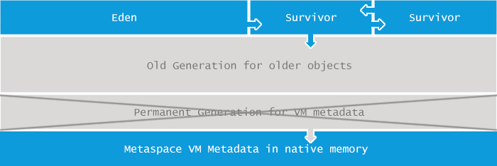

JVM限制了Java程序的最大内存, 修改/指定启动参数可以改变这种限制。Java将堆内存划分为多个部分, 如下图所示:

【Java8及以上】这些内存池的最大值, 由 -Xmx 和 -XX:MaxMetaspaceSize 等JVM启动参数指定. 如果没有明确指定, 则根据平台类型(OS版本+JVM版本)和物理内存的大小来确定。
java.lang.OutOfMemoryError: Metaspace 错误所表达的信息是: 元数据区(Metaspace) 已被用满
原因分析
如果你是Java老司机, 应该对 PermGen 比较熟悉. 但从Java 8开始,内存结构发生重大改变, 不再使用Permgen, 而是引入一个新的空间: Metaspace. 这种改变基于多方面的考虑, 部分原因列举如下:
- Permgen空间的具体多大很难预测。指定小了会造成 java.lang.OutOfMemoryError: Permgen size 错误, 设置多了又造成浪费。
- 为了 GC 性能 的提升, 使得垃圾收集过程中的并发阶段不再 停顿, 另外对 metadata 进行特定的遍历(specific iterators)。
- 对 G1垃圾收集器 的并发 class unloading 进行深度优化。
在Java8中,将之前 PermGen 中的所有内容, 都移到了 Metaspace 空间。例如: class 名称, 字段, 方法, 字节码, 常量池, JIT优化代码, 等等。
Metaspace 的使用量与JVM加载到内存中的 class 数量/大小有关。可以说, java.lang.OutOfMemoryError: Metaspace\ 错误的主要原因, 是加载到内存中的 class 数量太多或者体积太大。
示例
和 PermGen 类似, Metaspace 空间的使用量, 与JVM加载的 class 数量有很大关系。下面是一个简单的示例:
1 | public class Metaspace { |
可以看到, 使用 javassist 工具库生成 class 那是非常简单。在 for 循环中, 动态生成很多class, 最终将这些class加载到 Metaspace 中。
执行这段代码, 随着生成的class越来越多, 最后将会占满 Metaspace 空间, 抛出 java.lang.OutOfMemoryError: Metaspace. 在Mac OS X上, Java 1.8.0_05 环境下, 如果设置了启动参数 -XX:MaxMetaspaceSize=64m, 大约加载 70000 个class后JVM就会挂掉。
解决方案
如果抛出与 Metaspace 有关的 OutOfMemoryError , 第一解决方案是增加 Metaspace 的大小. 使用下面这样的启动参数:
1 | -XX:MaxMetaspaceSize=512m |
这里将 Metaspace 的最大值设置为 512MB, 如果没有用完, 就不会抛出 OutOfMemoryError。
有一种看起来很简单的方案, 是直接去掉 Metaspace 的大小限制。 但需要注意, 不限制Metaspace内存的大小, 假若物理内存不足, 有可能会引起内存交换(swapping), 严重拖累系统性能。 此外,还可能造成native内存分配失败等问题。
在现代应用集群中,宁可让应用节点挂掉, 也不希望其响应缓慢。
如果不想收到报警, 可以像鸵鸟一样, 把 java.lang.OutOfMemoryError: Metaspace 错误信息隐藏起来。 但这不能真正解决问题, 只会推迟问题爆发的时间。 如果确实存在内存泄露, 请参考前面的文章, 认真寻找解决方案。